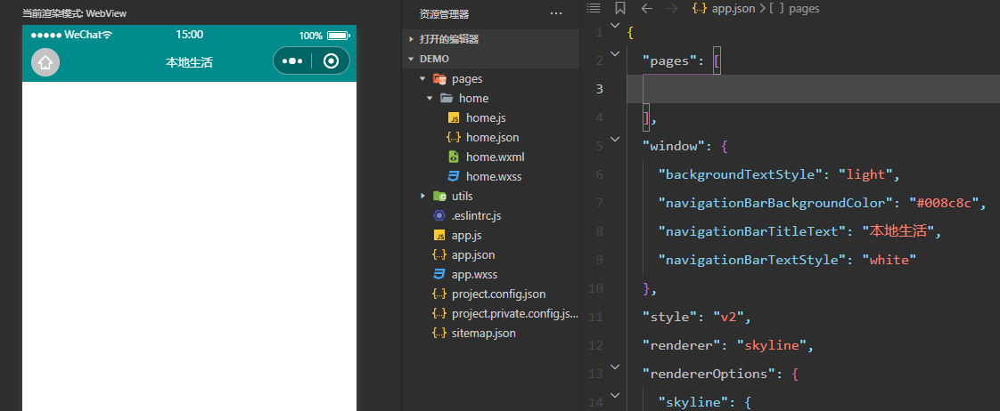
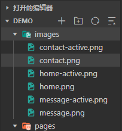
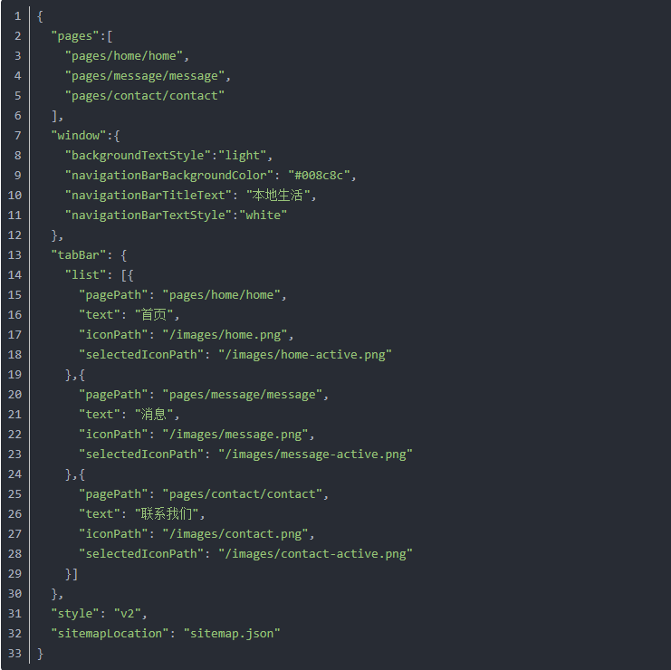
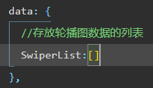
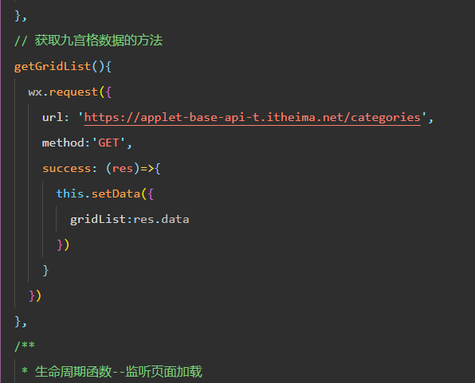
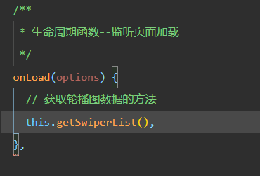
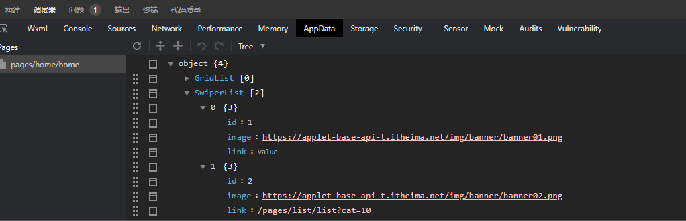
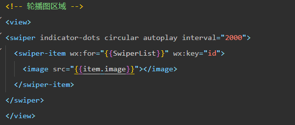
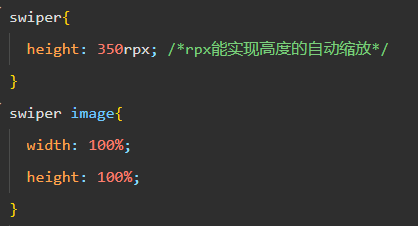
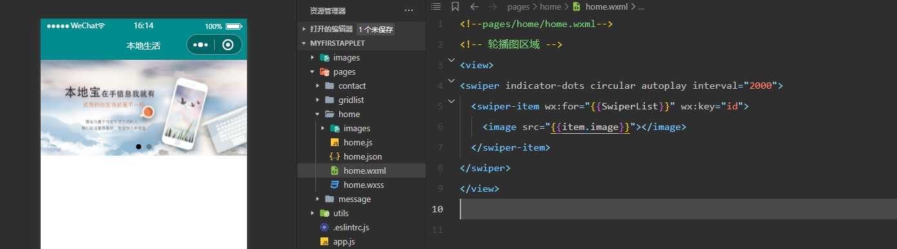

小程序案例
借助黑马的本地生活案例，加强一下自己对小程序的学习，并将学习过程分享出来，希望能和以前学习的知识相互印证
-
配置导航栏
导航栏是小程序的门户，用户进来第一眼看到的便是导航栏，其起着对当前小程序主题的概括。而我们新建的小程序时，第一步便开始配置导航栏。
如下：  -
配置tabBar
备注：因为配置tabBar需要借助字体图标，这里推荐一个字体图标库。网站链接
因为是案例，我就随便找了两个（一个作为未点击状态，一个作为已点击状态）
选好图标，命名如下：
准备好图片资源之后就要在 app.json 文件中配置tabBar了
代码如下：
进行到这，我们就已经能够实现点击下面三个图标让三个页面相互跳转了
-
实现页面轮播图
实现轮播图必须有图片资源，而在项目中一般是不会使用本地资源的，都是通过调用接口的形式拿到数据，在本项目中也是，因为轮播图是在 home 组件中进行使用，所有我们需要在home组件去调用接口
该案例所用的接口都来自黑马，我从csdn找到的素材，这是链接
-
在home.js文件的data（页面初始数据）方法中，创建一个用来存放轮播图的列表
如下： 
-
利用提供的接口，调用微信的request方法，发起get请求，拿到轮播图数据
如下： 
-
最后在onload（options）（监听页面加载）生命周期函数中，调用上述方法。
如下： 
可以在控制台的AppData中看到在data存放的数据 
-
在home.js文件的data（页面初始数据）方法中，创建一个用来存放轮播图的列表
-
拿到数据后，我们再去wxml中设置页面。
如下： 
-
给轮播图添加样式，给定宽度和高度，铺满屏幕
如下： 
到目前为止，我们的轮播图部分就已经完成了，轮播图swiper还有很多可以调整的属性，可以参考微信小程序的swiper文档 
-
配置九宫格
-
实现九宫格的功能和实现轮播图一样，通过调用接口，然后渲染到页面上
先创建存放九宫格数据的列表
如下：

-
同理，利用提供的接口，调用微信的request方法，发起get请求，拿到九宫格数据
代码如下：

这时可以通过控制台查看到数据
代码如下：

-
最后在onload（options）（监听页面加载）生命周期函数中，调用上述方法。
代码如下：

-
还是一样，拿到数据后我们去wxml页面中渲染页面
代码如下：

-
给获取到的数据添加样式：
代码如下：

目前为止，我们的九宫格也完成了
效果如下：

-